GUIDE TO TRAFFIC LIGHTS IN THE UK
Welcome to my guide to the different types of traffic light in the UK.
First, here is a quick summery to the UK's different types of traffic lights.
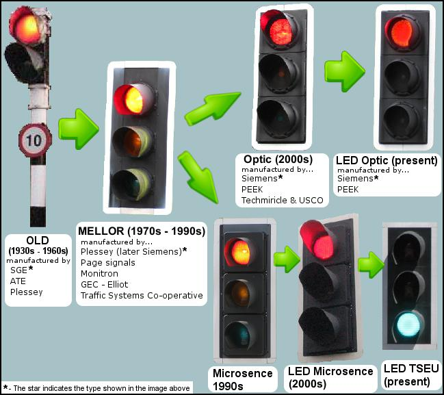
late 1920s - early 1970s Traffic Lights
These are Awesome and are very rare. Only a very few number of these have survived to the present day.
Where to find: None of these have survived to the present day on the public road. But there are a few about on private land. A couple of these have survived at various castles (like Dover castle and Carisbrooke Castle). The best places to go looking for old historic traffic lights are large areas of private land which feel kind of forgotten about (such as old industrial sites). Also places which only a small klich of people go like boat marinas and small private airports. (suprisingly, out of all places, grotty boat yards often have some forgoten about old traffic lights).
SGE traffic lights
Siemens & General Electric Railway Signal Co. were one of the two main manufacteres in the UK.
The UKs first Traffic Light
The first traffic lights in the UK were a one day trial on the 5th November 1927 at Princes Square in Wolverhampton by SGE.
It was so successful that a traffic light was permanently installed in October 1928.
Here is a historic photo of the traffic light in 1927. It apears to be SGE's american one-piece design. When SGE installed traffic lights across England they didn't use this design but instead used their design of indervidul lights.
This is a historic photo which is being shown under the grounds of Fair Use
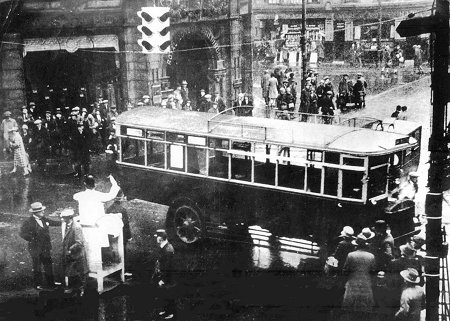
1930s - early 1960s SGE traffic lights
These are awesome old black/white striped traffic lights. Back in the 60s these were the most common type of traffic light in the UK. But today they are very rare to find.
Here are the two at Dover Castle.
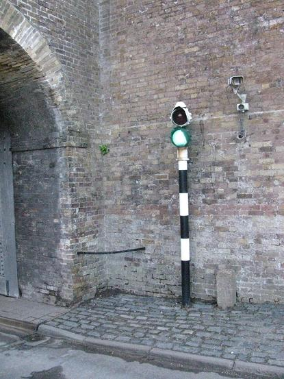
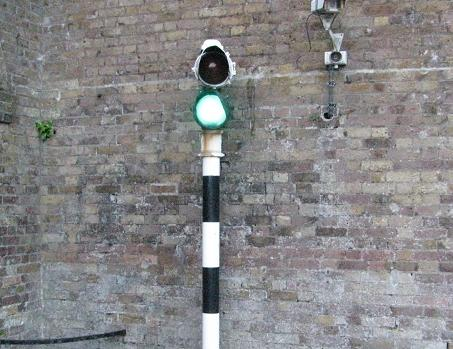
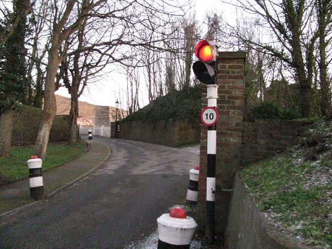
At a road junction in Gravesend, where there is just a boring set of TSEU traffic lights, on the pavement a street cover gives away that a long time ago there used to be SGEs here.
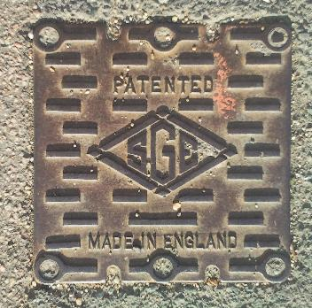
Here is a photo taken in 1965, on the corner of St Pancras Road - Euston Road.
Photo by John Barrett - (Creative Commons SA)
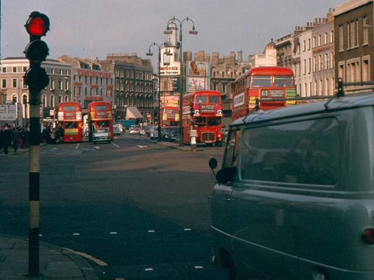
Also another 30s SGE that has survived to the present day is located at East Anglian Transport Museum, Lowestoft.
Here are some awesome old photos of SGEs elsewhere on the web...
North Ealing 1937
Golders Green 1943
ATE/ATM Electro-Matic traffic lights
Automatic Telephone & Electric Co Ltd / Automatic Telephone Manufacturing Company Ltd was the other main manufacturer of traffic lights in the UK. The traffic lights were called "Electro-matic" and were made in their factory in Edge lane in Liverpool. Later Plessey joined the partnership and the traffic lights were made under the Plessey name. For info about these companies see Plessey at the edge.
Electro-Matic Traffic lights were made from the 1930s to the early 1970s. These are awesome old traffic lights, but today they are very rare and only a few still exist.
Some of the earliest ones from the 30s had a bobble on the top, Click here for a picture of one of these at swale bridge (traffic light at bottom right corner).
Here is the 1930s Electro-matic traffic lights at Carisbrooke Castle (This is the only working Electro-matic traffic lights that I know off).
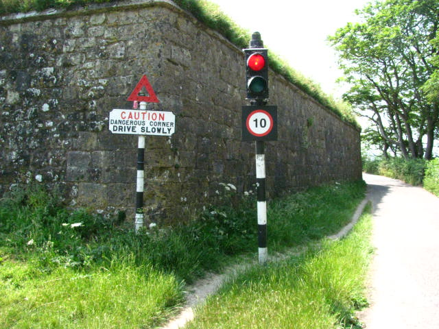
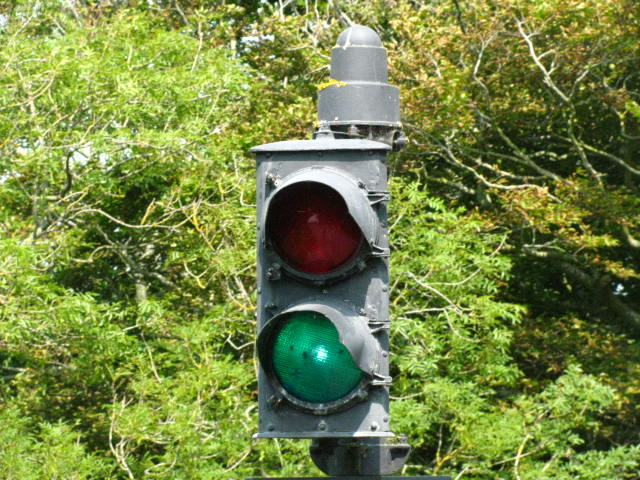
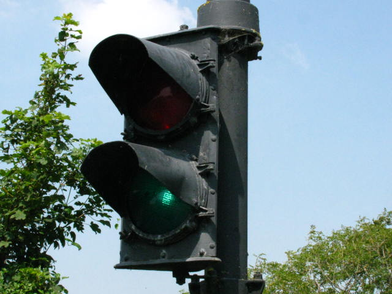
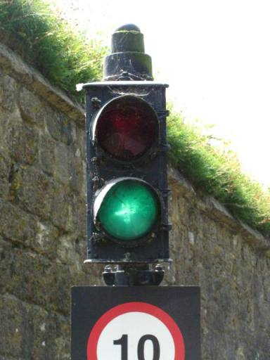
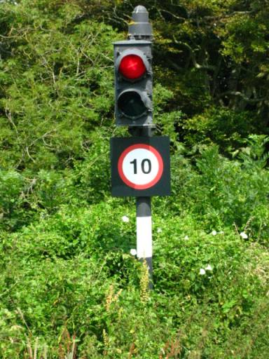
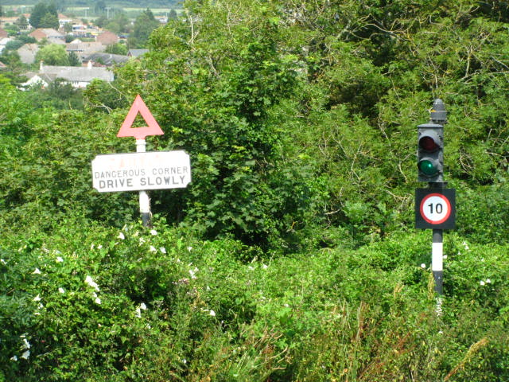
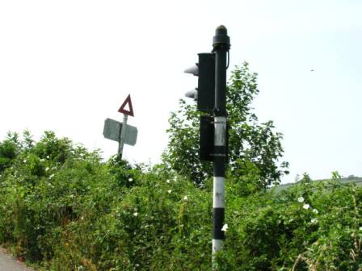
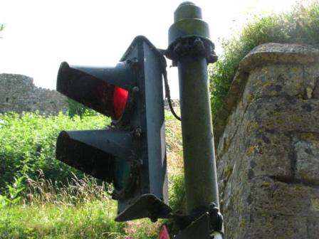
Here is an old Electro-matic traffic light that I randomly stumbled across at a harbour in Gravesend.
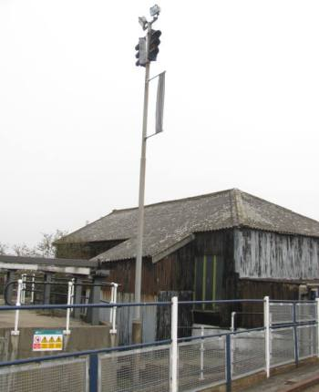
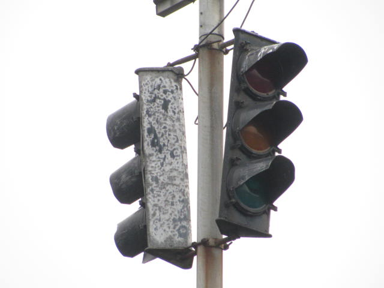
Often the only part that still survives today are the street covers. Even in the most modern of places, where no old street furniture survives, these covers are often the only remaining feature of the olden days.
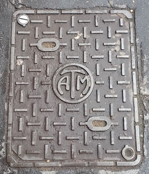
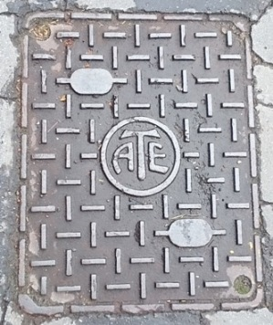
It seems that the ATM and ATE names were used interchangeably
Relay logic
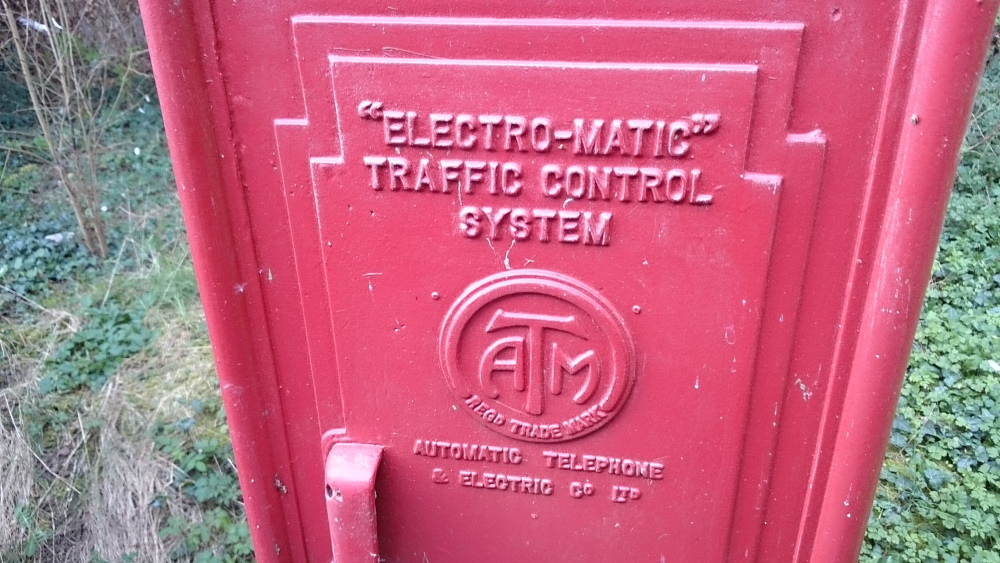
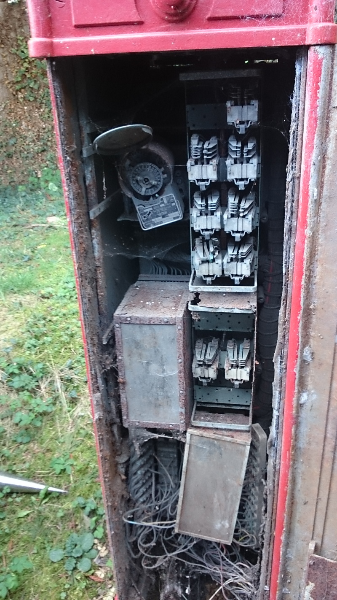
Here is a photo of some Electro-Matic traffic lights, near Earls Court, taken in 1976, shortly before they were replaced with mellors.
photo by Devon_21 - (Creative Commons NC SA)
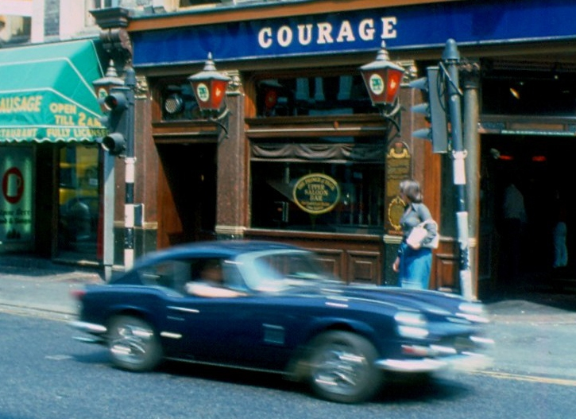
Notice the cap at the top of the poles. This is known as the "Policemans hat", if you see a Mellor traffic light in London that has a policemans hat on top of the pole then the traffic light was once an Electro-Matic.
Here are some awesome old photos of Electro-Matics elsewhere on the web...
Electro-Matics at Frognal Corner, Chislehurst
Electro-Matic in Sydney, Australia
Advert for Electro-matic
Advert for Electro-matic
Forest City traffic lights
These are very nice old traffic lights. These are rare.
Forest City made the UK's first pedestrian crossing in 1929 (only 2 years after the first traffic light). It had a push button for pedestrians to make the traffic light go red, but didn't have a red/green man pedestian light. In the mid 30s Forest City updated their design to also have a "DON'T CROSS" and "CROSS NOW" lights for pedestians.
For more info and to see some old Forest City brochure see CBRD's page on Forest City
Forest City made traffic lights from the late 1920s to the 1970s. Forest City were not able to adapt to the mellor era. (In 1973 all Traffic Lights on the public road had to be made to the Mellor design). Forest city did not manage to make a Mellor traffic light. After 1973 they carried on making traffic lights for private land, and they also sold street signs and lights. But no longer being able to sell traffic lights for roads must have lost them a lot of money. Eventually they were taken over by Signature signs.
Here is a very rare set of Forest City traffics, located at an old factory in Snodland (Kent). These used to controll the traffic through a narrow bridge (sadly no longer in use).
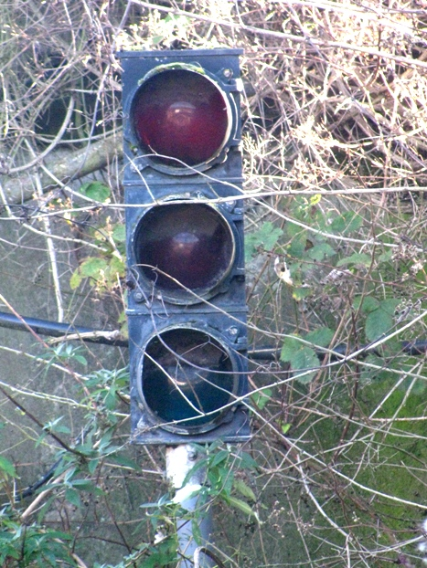
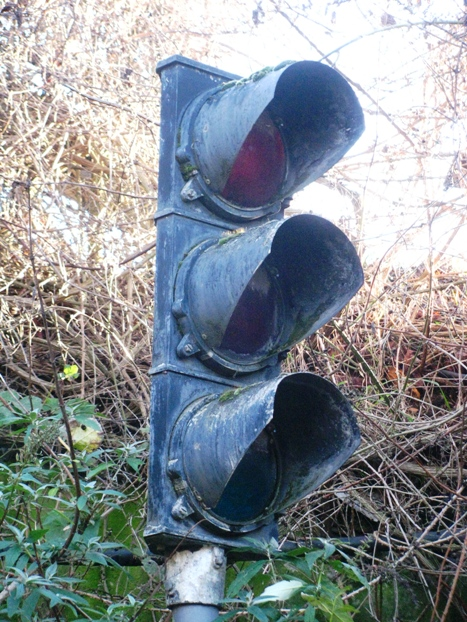
Also, at this factory there is an exquisitely rare set of Forest City pedestrian lights. Pre-Mellor traffic lights are few and far between, let alone pre-Mellor pedestrian traffic lights.
At this factory the pedestrian lights used to be used to tell pedestrians when they could go through the narrow bridge as there is no pavement.
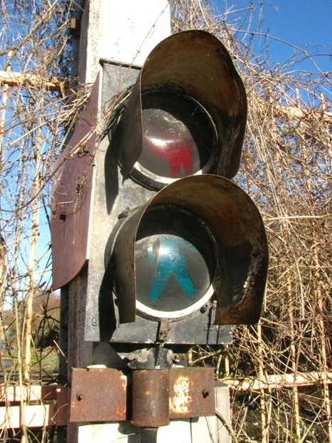
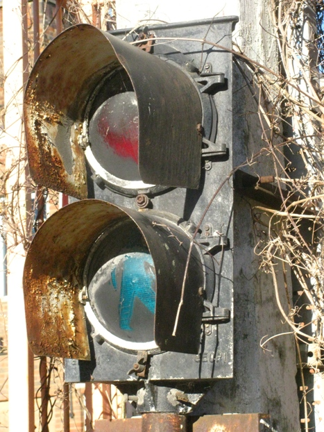
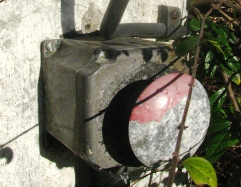
And here is the controll box. I don't know if this is original, but it looks interesting. Notice the lights on the box to show which traffic lights are lit.
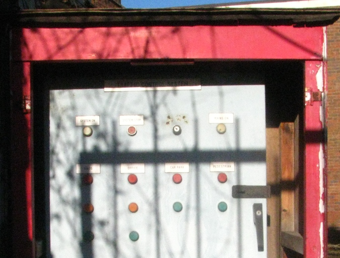
Here is a forest city at Rochester Airport (I think it is 1960s, but it is hard to date as the design never changed). Forest City's traffic lights look simular to Plessey's Electro-Matic.
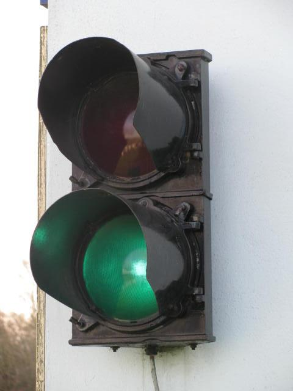
Forest city also made WigWags
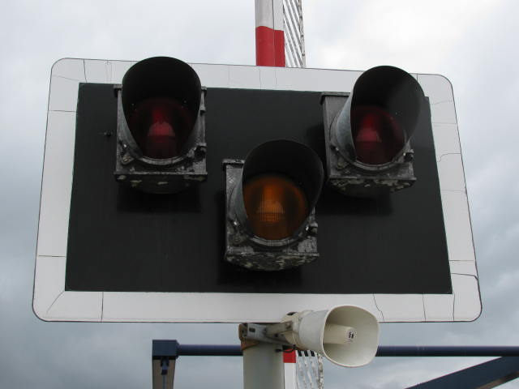
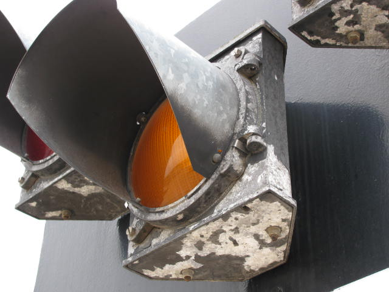
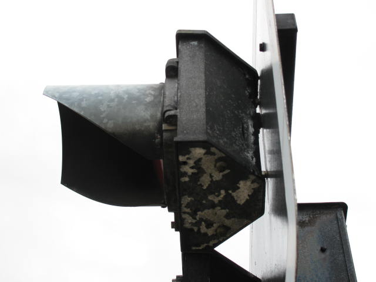
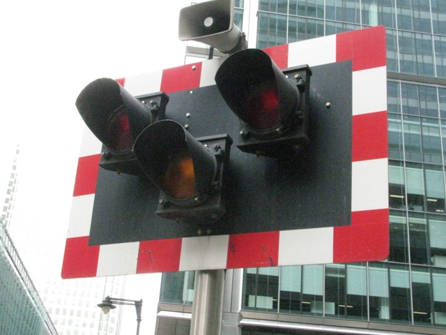
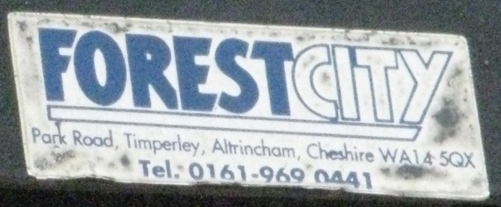
Forest city warning lights
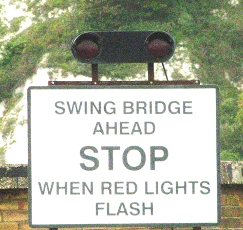
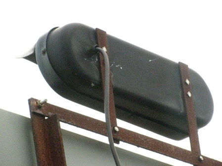
Pedestrian crossings
Panda Crossing (1960s)
The panda crossing was an unsuccessful new design of pedestrian crossing. There were red and yellow lights for the cars, and "CROSS" and "WAIT" lights for pedestrians. When the crossing was not in use, all of the lights were off, when a pedestrian pressed the button, the "wait" light came on for 3 seconds, and the main traffic light slowly flashed yellow. After 3 seconds the main traffic light flashed red, and the "cross" light came on for pedestrians. After about 20 seconds the "cross" light started flashing to tell pedestrians that their time was almost up, and the car's traffic light went back to flashing yellow, and after 10 seconds all the lights went out. (this means if a car driver came across a flashing yellow light, they would not know if it was about to go to red, or about to turn off). Also there was no "don't cross" light for pedestrians because people said it was against their rights to be told what to do, as traffic rules don't apply to pedestrians.
The first Panda crossing started operation on 2 April 1962, outside Waterloo Station.
for more info see cbrd.co.uk/histories/pedestriancrossings
X-ways and Pelican Crossings
Panda crossing were considered dangerous and were all replaced. Panda crossings were superseded by the pelican crossing, (the first pelican crossings were called X-ways as these had a white X light, instead of a green light for cars).
The first X-way started operation at Lincoln High Street on the 7 March 1967. and the first actual pelican crossing started operation in the late 1960s. The Pelican Crossing was the new brand new design of crossing, which was supposed to be part of the new design of traffic light, The Mellor, But the Mellor traffic light design was not yet ready (and didn't come out until 1973). So in the late 60s and early 70s several pedestrian crossings started appearing using the old style SGE (now called GEC) and old style Plessey Electro-Matic designs.
Sadly no Panda crossings or X-ways have survived to the present day. And I don't know if any complete pre-mellor Pelican Crossings have survived. but there are some pre-mellor red/green man lights that do still exist, they are very rare, please tell me if you know where any are located.
GEC traffic lights
In the 1960s SGE changed to making their traffic lights out of plastic. Also Siemens left the partnership (and left the world of traffic lights until their return in the 1990s), the company then became "GEC".
Here is an old photo of a pre-Mellor GEC pedestrian crossing.
This is a historic photo which is being shown under the grounds of Fair Use
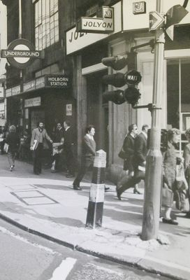
Here are some very rare pre-Mellor red/green GEC pedestrian lights. This one is located at the level crossing in Grays (red man only).
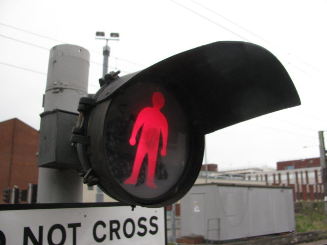
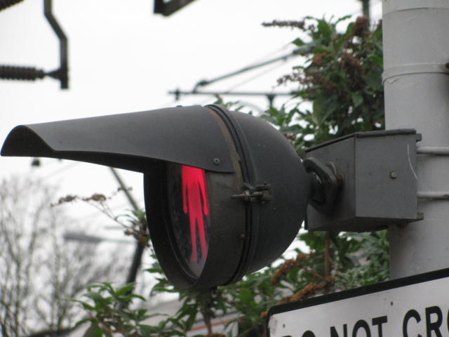
GEC WigWags
1960s SGE/GEC WigWags
Despite their age, there are still some of these around.
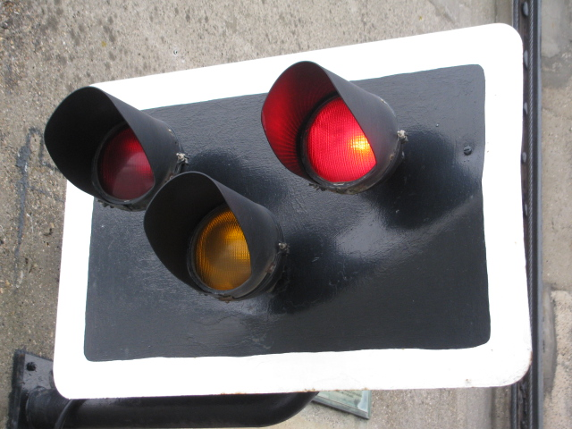
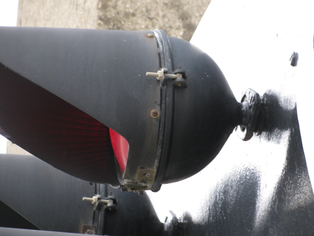
VERY RARE SGE vertical wigwag. (located at Swale bridge. click here for video)
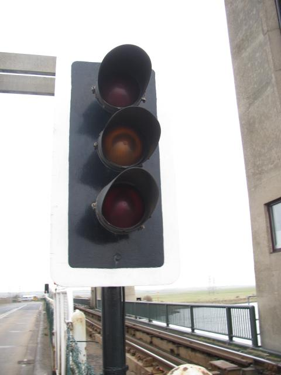
Here is an old WigWag which has had a new border clipped onto the original board, so that it looks like the more common level crossing wigwags. Notice that even though the hoods are plastic, the lights themselves are metal.
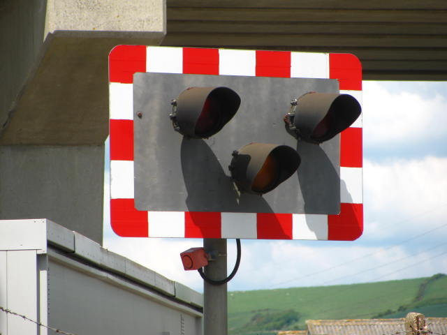
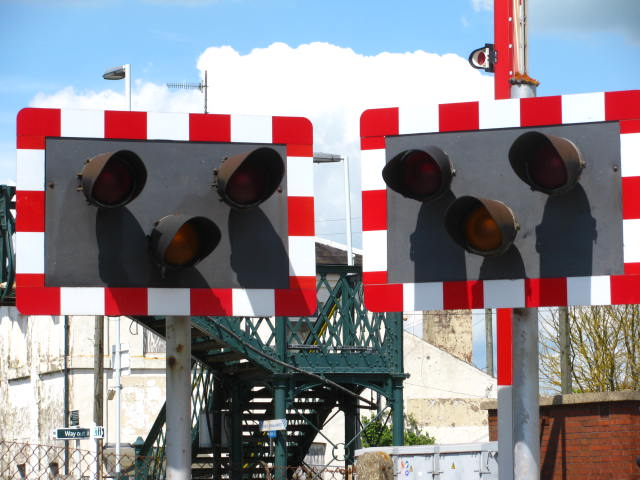
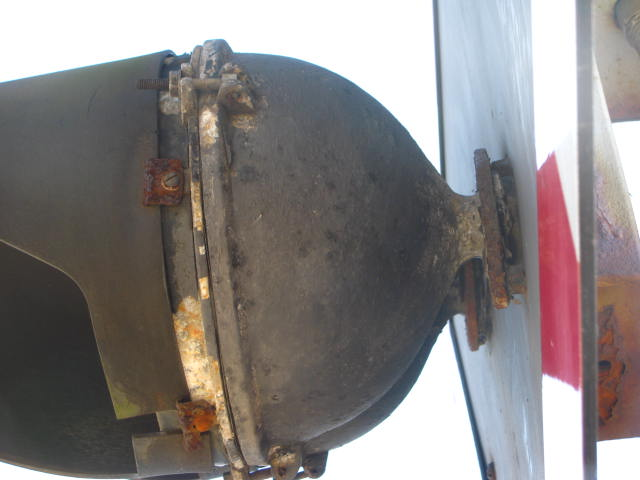
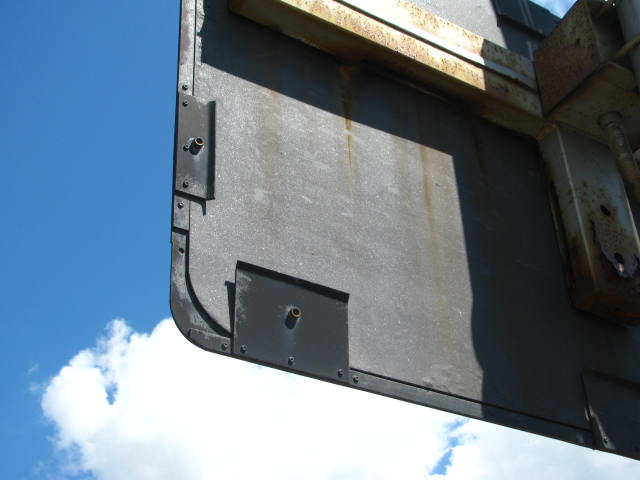
And it is at this point of traffic light history when in 1973 the Mellor design began. But even though there were Mellor wigwags, for some unknown reason, British Rail carried on installing the old design of lights.
1970s GEC WigWags
These carried on being made into the mellor era, and are actually not rare at all. You can find these at loads of level crossings.
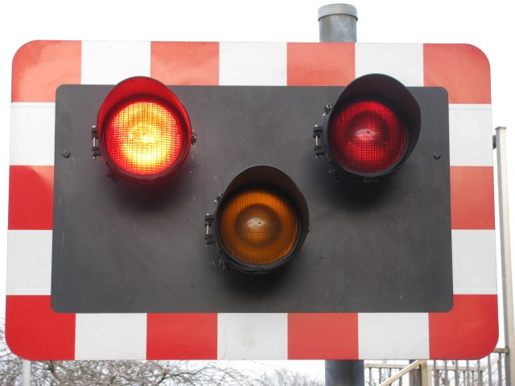
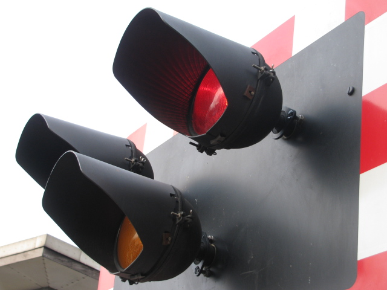
1980s GEC WigWags (made by other companies)
Now this is rather weird. For some unknown reason, British Rail still wanted old style WigWags. This is very odd as this design was now very dated. The old SGE/GEC traffic lights were being replaced thoughout the country, but British Rail carried on with this outdated design, even though there were Mellor designs of WigWag available.
And what was even more strange was that British Rail were getting these built from other manufacturers, as it seems that GEC had long since stopped making these.
Here is one by "National Railway Supplies" (an unknown company which got taken over by Unipart-Dorman).
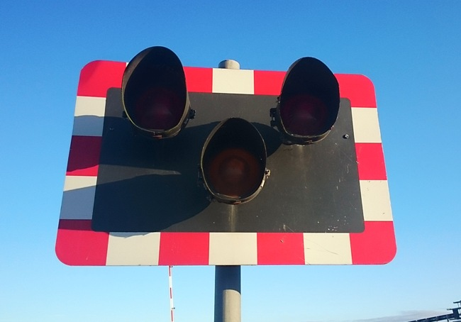
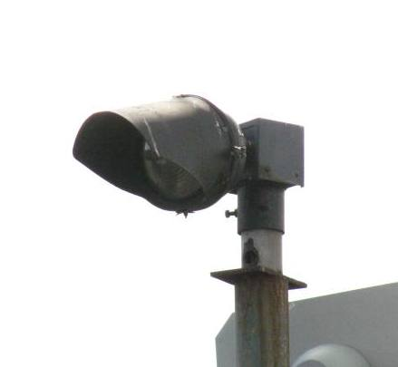
Present day Unipart-Dorman WigWag
These are made by the large railway signaling company Unipart-Dorman. These WigWags are LED and their design seems to still resemble the old SGE design (It's like they took the old 30s design and updated it).
THE MELLOR DESIGN (1973 - 1990s)
The Mellor was a new design of traffic light in 1973. This was the standard design of traffic light made from the 1970s to the 1990s, and is the UKs most iconic design of traffic light. Until recently, this was the most common design of traffic light in the UK.
These traffic lights were very well designed, and are considered a design classic. In the late 60s/early 70s the government wanted to create a standerdized design of traffic light for Britain, the new design was not just to be functional but to be an iconic design, so they hired in a profession desginer, David Mellor. (There is a David Mellor Museum in the Peak District. but what's odd about the museum is that the traffic lights on display are not the David Mellor type, but are actually Peek Elites!)
In the Mellor era, traffic light manufacturers had to build their traffic lights to the Mellor design. This means that all makes of traffic light now looked exactly the same (except for some the small details). Mellor traffic lights were made by Plessey, Siemens, Page signals, Monitron, GEC - Elliot, GEC, Traffic Systems Co-operative, and a few made by Peek (which are very rare).
PLESSEY (later Siemens)
Plessey is the most common type of Mellor, they were taken over by Seimens in 1998.
PAGE SIGNALS
Page Signals are the second most common type of Mellor. They look almost identical to Plessey (the only difference between them is a very minute detail. The Page Signals Mellor has a slight ring around the green light (but the plessey doesn't), this is for where if it had the larger green arrow, this is where it would go).
PEEK
Page Signals were taken over by Peek in the early 2000s, and they almost immedeatly stopped making Mellors. A Peek Mellor is ultra rare.
Photo by Sam Bee
Photo by Sam Bee
GEC Elliott
Has a slightly darker plastic, and the lights are ever so slightly closer together
GEC
GEC dropped the "Elliott" from there name in the 80s. After this the main traffic light stayed the same, but the pedestian light was updated to no longer have the line between the red and green man.
Monitron
Monitron were a very small company. I have only seen one of their Mellors once.
Traffic systems co-operative
These were mainly used in Ireland. They are quite a bit different from the other Mellors.
And that was just a summery of the main types of Mellor traffic lights. There are loads more different types of mellor including interesting unusual and obscure ones.
CLICK HERE TO SEE THE REST OF MY MELLOR PHOTOS
THE OPTIC DESIGN (2000s)
There are pretty much only two different manufactorers of this type of traffic light, Seimens and Peek. This type of traffic light came out in the early 2000s, and was VERY popular. This is the most common type of traffic light in the UK.
This type of traffic light has lenses designed by the SIRA research centre.
First, here is a comparison between the Melor and the Optic
As with the Mellor, there are few differences between the different makes of this traffic light. The differences between the Seimens and Peek include..... there is diferent styling on the back, the white border on the peek is further away from the main part of the traffic light than the Seimens, and the Peek has visible screw holes on the front.
HOW IT WORKS |
Seimens
I think these are ever so slightly nicer than Peeks ones.
Peek
There are absolutly loads of these things about.
London version
Looks a lot more ugly without the white suround. There are so many of these things all across london.
Techmiracle and Ultra Signal Co
I have only ever seen one of these once. These are two small companies, they later merged to become Motus.
CLICK HERE TO SEE MORE PHOTOS OF THESE TRAFFIC LIGHTS
THE LED OPTIC DESIGN (present day)
The LED design has been superseded by the LED Optic design.
Off topic: I live in Medway and Medway council are always tight on money, espesally nowadays, but in late 2010 they must have had some sort of govement grant or something, as despite all the cuts, they managed to find the money to replace every single traffic light in Medway, despite the fact all of the existing traffic lights were less than 10 years old (they were installed in the early 2000s to replace the Mellors). These traffic lights didn't need replacing (some of them were as little as two years old, like the one outside Aldi). While at same time other parts of the council are despretly short of money. It amazes me the way council budgets seem to work.
With these LED traffic lights, there is no color in the lens what so ever. This is because the LEDs give out colored light, so the lenses don't need to be colored. This meens that in bright sunlight, the traffic light will never aprear lit. (This is how all modern traffic lights should be. Other present day designs of LED traffic light like the TSEU still have colored lenses, totally not needed).
top - You can tell the difference between Siemens and Peek as Peek has screw holes at the front. But now Siemens also makes LED units to be retro-fitted into non-LED Peeks. These have screw holes so it can be attached, but as it is a Siemens the holes are made smaller with a slight curve. Also it can get more complicated than this, as Peek and Siemens parts are interchangeable, some traffic lights will contain both. |
SIEMENS (prototype LED)
SIEMENS (standard LED)
PEEK
non-LED PEEK retro-fitted with SEIMENS LEDs
Wierd non-LED PEEK retro fitted with unknown LEDs (located in Croyden)
And that was just a summary of Seimens and Peek traffic lights, CLICK HERE TO SEE MORE OF THIS TYPE OF TRAFFIC LIGHT
MICROSENSE (1990s - 2000s)
This page was suppost to be in date order but it didn't turn out that way - So lets now jump back to the 1990s
In the late 90s Microsense made what they thought was an update on the Mellor design.
Microsense with Mellor arrow
Microsense with horrid small arrow
Spot the diffrence. Mellor (left) Microsense (right).
London version
Pedestrian
not really much different to a Mellor
wigwag
VERY RARE MICROSENSE MIDDLE SECTION LIGHTS
This is located in Aylesford near maidstone. These lights are in the middle of a traffic light controlled narrow road. The no turn lights light up in the direction that traffic is comming from, so that cars entering the narrow road inbetween the main traffic lights don't turn into oncomming traffic. Also when there is no traffic moving both the no turn lights turn on. This doesn't make sense, it would have been better to have used green arrows instead of no turn lights.
MICROSENSE LED (2000s)
In the mid 2000s Microsense made an LED version of their Traffic Light. They only made these for a very short time, as they relised that with LEDs they could now make their traffic lights a lot thinner, so they updated the design again to the present day TSEU. This means Microsense LED traffic lights are rare. Also there apears to be more one design of LED fixture with these.
Flat design LED
London version (no white border) with LEDs with curved lense
Microsense - pedestrian
These pedestrian ones are more common, as the first TSEUs still used these for the pedestrian lights.
THE TSEU LED DESIGN (late 2000s - 2010s)
In the late 2000s Microsense merged with Traffic Signals UK Limited (whoever they were)
TSEU made a revamped design of LED traffic light to rival Peek and Siemens. The TSEU traffic light is very thin (due to it being LED), which is an interesting space saving design. But what I don't like about these, is aswell as being thin the actuall size of the traffic light is smaller, the lights are closer together, and they are just too easy to be missed. Also these TSEUs have colored lenses despite being LED. Seimens and Peek realised that having colored LEDs means you do not need colored lenses, which means they have removed the problem of their traffic lights apearing to be lit in bright sunlight. I really do not understand why TSEU havn't done the same.
Anyway, despite all of this, Kent County Council must like them, as almost every traffic light in Kent (exept Medway) is now a TSEU. (And with Kents traffic lights all being the same, Kent is now a slightly less interesting place than it was).
In March 2008 TSEU was taken over by Telent, but there hasn't been any change to the traffic light design. (In 2011, the TSEU sticker they put on the back that has the TSEU logo, now just says telent is an increadably boring way.
ALUSTAR LED DESIGN (2000s - 2010s)
A new very nice shiney modern stylish LED traffic light made of aluminium.
The Alustar is manufactured by Swarco Futurit, it is designed for use in Europe.
Motus (which is merge between Techmiracle and Ultra Signal Co) designed a UK version of the Alustar. The UK version is bigger and has more space between the lights, but it is still only the size of a TSEU (which I have critisized for being too small).
Despite their stylish looks they have not been popular in the UK, there are very few about.
THE MODERN DAY (present day)
As we enter a new era of traffic lights and councils demand a lower price, the quality of traffic lights has gone downhill. With less of the classic models being installed, we now have some questionable quality modern day traffic lights. While some of these are ok, others have gone backwards in terms of features. Some modern traffic lights use arrays of LEDs. But some use colored lenses. Who in their right mind would find colored lenses acceptable in the modern day. PEEk and Siemens proved the concept and necessity of clear lenses. To go back to colored lenses that appear lit in bright sunlight show the lack of education that some people have.
Unknown brand LED traffic light
This traffic light does look a bit cheap in terms of construction. But at least the LEDs are clear when not lit, so it does an acceptable job in that sense
CHEAP EUROPEAN TRAFFIC LIGHTS (present day)
As well as the shiney Alustar, Swarco Futurit also make some VERY cheap and nasty LED traffic lights.
These horrid cheap traffic lights have totally taken over europe. Every single country in europe has these nasty things. well, apart from two countrys, one being the UK, and the other being... the country that is always nice to go to as everything is soooooo different, and this county is of course... France. (Typical France doesn't have these cheap lights because they are not French! instead france have their own designs of traffic light).
Other than the UK and France, these cheap traffic lights are absolutely everywhere, wherever you go. I am amazed that these things are so popular thoughoout europe.
In the UK, the only places you will find these crap traffic lights is on private land, on barrier entry systems (like the Safelite barrier entry system, which is very unreliable and keeps breaking down) has these. (Note: these traffic lights are not branded as "Swarco Futurit", but are branded by the company installing them, therefore these ones say "Safelite" on the front.)
And here is the Swarco Futurit mini traffic light, which is designed to sit lower down the pole of the main traffic light in europe, to be visable to the car waiting at the lights. But in England they are not used like this, instead they are found on private land on barrier entry systems.
CLICK HERE TO SEE TRAFFIC LIGHTS IN EUROPE
YELLOW MAN IN IRELAND
Ireland is the only country in the world that has a yellow man light on their pedestrian traffic lights.
Ireland's history of traffic lights is simular to the UK's, they used Mellors throughout the mellor era (Their Mellors are slightly different to UK ones as they are made by Traffic systems co-operative). Nowadays they use both Siemens traffic lights and Alustar traffic lights.
CLICK HERE TO SEE YELLOW MAN TRAFFIC LIGHTS IN IRELAND
NON-STANDARD TRAFFIC LIGHTS
There are many other types of traffic lights on private land and non-standard traffic lights for other uses (Temporary traffic lights). I have put these in a seperate page.
CLICK HERE TO SEE NON-STANDARD TRAFFIC LIGHTS